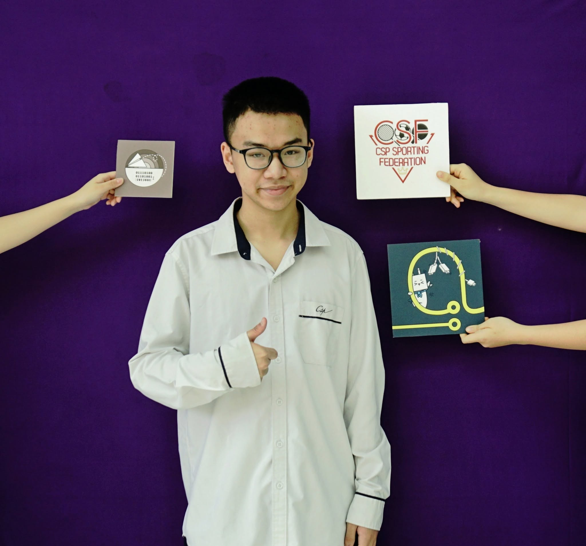

Tên mình là Vương Trí Dũng (MSSV: 25022811), hiện đang theo học ngành Trí tuệ nhân tạo tại trường Đại học Công Nghệ - Đại học Quốc gia Hà Nội.
Nắm vững kiến thức về cấu trúc máy tính, nhận diện thiết bị ngoại vi và rèn luyện kỹ năng quản lý, phân cấp tệp tin tối ưu trên hệ điều hành.
Quá trình thực hiện:Thực hành trực tiếp trên File Explorer để tạo lập cây thư mục chuẩn. Phân loại, sao chép và định dạng lại các tệp tin lưu trữ một cách có hệ thống, kèm theo ảnh chụp minh họa luồng công việc.
Phát triển kỹ năng tra cứu học thuật chuyên sâu và khả năng thẩm định, đánh giá mức độ tin cậy của các nguồn thông tin trên Internet.
Quá trình thực hiện:Sử dụng các toán tử tìm kiếm nâng cao để thu thập và lập bảng đánh giá chi tiết 10 tài liệu khoa học nền tảng (như kiến trúc Transformer, hệ thống NLP) hỗ trợ cho báo cáo chuyên ngành AI.
Hiểu rõ các khái niệm cốt lõi của AI và rèn luyện tư duy thiết kế cấu trúc lệnh (Prompt) nhằm khai thác tối đa sức mạnh của mô hình ngôn ngữ lớn.
Quá trình thực hiện:Thiết lập và đối chiếu giữa Prompt thông thường với Prompt nâng cao (sử dụng Role Prompting, Chain-of-thought) để yêu cầu AI giải thích và phân tích các khái niệm kỹ thuật số học phức tạp.
Khai thác thành thạo các công cụ điện toán đám mây để tối ưu hóa quy trình làm việc nhóm và giao tiếp dự án từ xa.
Quá trình thực hiện:Tích hợp bảng Kanban của Trello, hệ thống lưu trữ Google Docs/Drive và kênh trao đổi Discord để lên kế hoạch, phân chia vai trò và hoàn thiện dự án thiết kế "Cẩm nang tân sinh viên".
Vận dụng linh hoạt các công cụ Trí tuệ nhân tạo tạo sinh (Generative AI) để hỗ trợ quá trình sáng tạo và sản xuất đa phương tiện.
Quá trình thực hiện:Sử dụng AI văn bản để phác thảo kịch bản nội dung, kết hợp công cụ tạo ảnh và các nền tảng thiết kế đồ họa đám mây để sản xuất Infographic chuyên nghiệp về chủ đề môi trường đại dương.
Thiết lập lằn ranh đạo đức rõ ràng, xây dựng ý thức sử dụng AI an toàn và đảm bảo tính minh bạch tuyệt đối trong nghiên cứu học thuật.
Quá trình thực hiện:Xây dựng "Bộ nguyên tắc cá nhân", đi sâu vào phân tích các tình huống sử dụng AI trong việc tìm lỗi (debug) mã nguồn để đảm bảo bản thân luôn làm chủ công nghệ thay vì lạm dụng hoặc đánh cắp chất xám.
Quá trình xây dựng Portfolio và thực hiện chuỗi bài tập tuần là một trải nghiệm rèn luyện toàn diện. Nó không chỉ giúp mình hệ thống hóa lại các kỹ năng số đã học mà còn tạo ra một "bức tranh" rõ nét về sự tiến bộ của bản thân. Việc phải đúc kết và trình bày lại những gì đã làm buộc mình phải nhìn nhận lại các lỗ hổng kiến thức, từ đó rèn luyện tư duy logic, tính tỉ mỉ và sự kiên nhẫn khi xử lý các vấn đề học thuật cũng như kỹ thuật.
Những kiến thức quan trọng nhất mình đã tích lũy được bao gồm: Kỹ năng tìm kiếm và khai thác nguồn tài liệu chuẩn xác bằng toán tử, năng lực quản lý dự án trực tuyến thông qua Trello/Docs và đặc biệt là nghệ thuật làm chủ AI (Prompt Engineering). Khả năng phân vai (Role Prompting) và yêu cầu AI suy luận từng bước (Chain-of-thought) chính là chìa khóa giúp mình tối ưu hóa việc học tập chuyên ngành AI một cách chủ động.
Điểm tâm đắc nhất của mình trong dự án này là việc xây dựng thành công "Bộ nguyên tắc cá nhân về sử dụng AI có trách nhiệm", giúp vạch rõ ranh giới giữa việc dùng AI làm công cụ hỗ trợ và việc phụ thuộc mù quáng. Thách thức lớn nhất trong suốt quá trình xây dựng Portfolio là việc phải chọn lọc, cô đọng nội dung từ rất nhiều thông tin thực hành và kỹ thuật khác nhau, sao cho trang web vừa thể hiện đầy đủ chuyên môn, vừa giữ được tính thẩm mỹ và dễ đọc cho người xem.